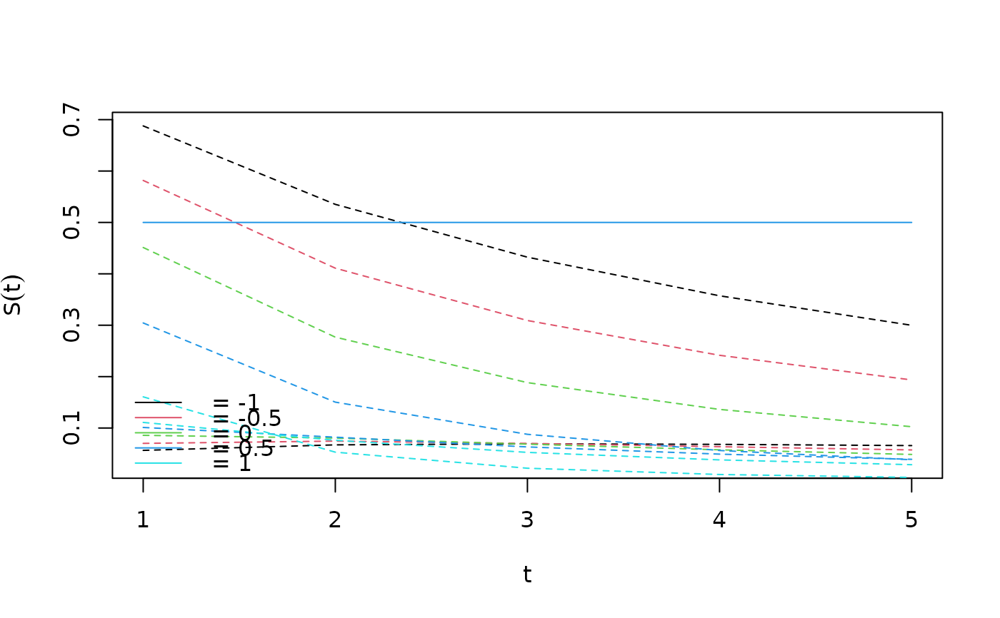

Regression standardization in shared frailty gamma-Weibull models
standardize_parfrailty.Rdstandardize_parfrailty performs regression standardization in shared frailty
gamma-Weibull models, at specified values of the exposure, over the sample
covariate distribution. Let \(T\), \(X\), and \(Z\) be the survival
outcome, the exposure, and a vector of covariates, respectively.
standardize_parfrailty uses a fitted Cox proportional hazards model to
estimate the standardized survival function
\(\theta(t,x)=E\{S(t|X=x,Z)\}\), where \(t\) is a specific value of
\(T\), \(x\) is a specific value of \(X\), and the expectation is over
the marginal distribution of \(Z\).
Usage
standardize_parfrailty(
formula,
data,
values,
times,
clusterid,
ci_level = 0.95,
ci_type = "plain",
contrasts = NULL,
family = "gaussian",
references = NULL,
transforms = NULL
)Arguments
- formula
The formula which is used to fit the glm model for the outcome.
- data
The data.
- values
A named list or data.frame specifying the variables and values at which marginal means of the outcome will be estimated.
- times
A vector containing the specific values of \(T\) at which to estimate the standardized survival function.
- clusterid
An optional string containing the name of a cluster identification variable when data are clustered.
- ci_level
Coverage probability of confidence intervals.
- ci_type
A string, indicating the type of confidence intervals. Either "plain", which gives untransformed intervals, or "log", which gives log-transformed intervals.
- contrasts
A vector of contrasts in the following format: If set to
"difference"or"ratio", then \(\psi(x)-\psi(x_0)\) or \(\psi(x) / \psi(x_0)\) are constructed, where \(x_0\) is a reference level specified by thereferenceargument. Has to be beNULLif no references are specified.- family
The family argument which is used to fit the glm model for the outcome.
- references
A vector of references in the following format: If
contrastsis notNULL, the desired reference level(s).- transforms
A vector of transforms in the following format: If set to
"log","logit", or"odds", the standardized mean \(\theta(x)\) is transformed into \(\psi(x)=log\{\theta(x)\}\), \(\psi(x)=log[\theta(x)/\{1-\theta(x)\}]\), or \(\psi(x)=\theta(x)/\{1-\theta(x)\}\), respectively. If the vector isNULL, then \(\psi(x)=\theta(x)\).
Value
An object of class std_surv.
This is basically a list with components estimates and covariance estimates in res
Results for transformations, contrasts, references are stored in res_contrasts.
The output contains estimates for contrasts and confidence intervals for all combinations of transforms, references
Details
standardize_parfrailty assumes that a shared frailty gamma-Weibull model
$$\lambda(t_{ij}|X_{ij},Z_{ij})=\lambda(t_{ij};\alpha,\eta)U_iexp\{h(X_{ij},Z_{ij};\beta)\}$$
has been fitted, with parametrization as descibed in the help section for
parfrailty. Integrating out the gamma frailty gives the survival
function
$$S(t|X,Z)=[1+\phi\Lambda_0(t;\alpha,\eta)exp\{h(X,Z;\beta)\}]^{-1/\phi},$$
where \(\Lambda_0(t;\alpha,\eta)\) is the cumulative baseline hazard
$$(t/\alpha)^{\eta}.$$ The ML estimates of \((\alpha,\eta,\phi,\beta)\)
are used to obtain estimates of the survival function \(S(t|X=x,Z)\):
$$\hat{S}(t|X=x,Z)=[1+\hat{\phi}\Lambda_0(t;\hat{\alpha},\hat{\eta})exp\{h(X,Z;\hat{\beta})\}]^{-1/\hat{\phi}}.$$
For each \(t\) in the t argument and for each \(x\) in the
x argument, these estimates are averaged across all subjects (i.e.
all observed values of \(Z\)) to produce estimates
$$\hat{\theta}(t,x)=\sum_{i=1}^n \hat{S}(t|X=x,Z_i)/n.$$ The variance for
\(\hat{\theta}(t,x)\) is obtained by the sandwich formula.
Note
Standardized survival functions are sometimes referred to as (direct) adjusted survival functions in the literature.
standardize_coxph/standardize_parfrailty does not currently handle time-varying exposures or
covariates.
standardize_coxph/standardize_parfrailty internally loops over all values in the t argument.
Therefore, the function will usually be considerably faster if
length(t) is small.
The variance calculation performed by standardize_coxph does not condition on
the observed covariates \(\bar{Z}=(Z_1,...,Z_n)\). To see how this
matters, note that
$$var\{\hat{\theta}(t,x)\}=E[var\{\hat{\theta}(t,x)|\bar{Z}\}]+var[E\{\hat{\theta}(t,x)|\bar{Z}\}].$$
The usual parameter \(\beta\) in a Cox proportional hazards model does not
depend on \(\bar{Z}\). Thus, \(E(\hat{\beta}|\bar{Z})\) is independent
of \(\bar{Z}\) as well (since \(E(\hat{\beta}|\bar{Z})=\beta\)), so that
the term \(var[E\{\hat{\beta}|\bar{Z}\}]\) in the corresponding variance
decomposition for \(var(\hat{\beta})\) becomes equal to 0. However,
\(\theta(t,x)\) depends on \(\bar{Z}\) through the average over the
sample distribution for \(Z\), and thus the term
\(var[E\{\hat{\theta}(t,x)|\bar{Z}\}]\) is not 0, unless one conditions on
\(\bar{Z}\). The variance calculation by Gail and Byar (1986) ignores this
term, and thus effectively conditions on \(\bar{Z}\).
References
Chang I.M., Gelman G., Pagano M. (1982). Corrected group prognostic curves and summary statistics. Journal of Chronic Diseases 35, 669-674.
Dahlqwist E., Pawitan Y., Sjolander A. (2019). Regression standardization and attributable fraction estimation with between-within frailty models for clustered survival data. Statistical Methods in Medical Research 28(2), 462-485.
Gail M.H. and Byar D.P. (1986). Variance calculations for direct adjusted survival curves, with applications to testing for no treatement effect. Biometrical Journal 28(5), 587-599.
Makuch R.W. (1982). Adjusted survival curve estimation using covariates. Journal of Chronic Diseases 35, 437-443.
Examples
require(survival)
# simulate data
set.seed(6)
n <- 300
m <- 3
alpha <- 1.5
eta <- 1
phi <- 0.5
beta <- 1
id <- rep(1:n, each = m)
U <- rep(rgamma(n, shape = 1 / phi, scale = phi), each = m)
X <- rnorm(n * m)
# reparametrize scale as in rweibull function
weibull.scale <- alpha / (U * exp(beta * X))^(1 / eta)
T <- rweibull(n * m, shape = eta, scale = weibull.scale)
# right censoring
C <- runif(n * m, 0, 10)
D <- as.numeric(T < C)
T <- pmin(T, C)
# strong left-truncation
L <- runif(n * m, 0, 2)
incl <- T > L
incl <- ave(x = incl, id, FUN = sum) == m
dd <- data.frame(L, T, D, X, id)
dd <- dd[incl, ]
fit.std <- standardize_parfrailty(
formula = Surv(L, T, D) ~ X,
data = dd,
values = list(X = seq(-1, 1, 0.5)),
times = 1:5,
clusterid = "id"
)
print(fit.std)
#>
#> Formula: Surv(L, T, D) ~ X
#> Exposure:
#> Survival functions evaluated at t = 1
#>
#> Estimate Std. Error lower 0.95 upper 0.95
#> [1,] 0.799 0.0565 0.688 0.909
#> [2,] 0.719 0.0701 0.582 0.857
#> [3,] 0.619 0.0858 0.451 0.787
#> [4,] 0.503 0.1011 0.304 0.701
#> [5,] 0.378 0.1109 0.161 0.595
#>
#>
#> Formula: Surv(L, T, D) ~ X
#> Exposure:
#> Survival functions evaluated at t = 2
#>
#> Estimate Std. Error lower 0.95 upper 0.95
#> [1,] 0.667 0.0672 0.535 0.799
#> [2,] 0.557 0.0745 0.411 0.703
#> [3,] 0.435 0.0805 0.277 0.592
#> [4,] 0.311 0.0822 0.150 0.473
#> [5,] 0.202 0.0762 0.053 0.352
#>
#>
#> Formula: Surv(L, T, D) ~ X
#> Exposure:
#> Survival functions evaluated at t = 3
#>
#> Estimate Std. Error lower 0.95 upper 0.95
#> [1,] 0.568 0.0693 0.4324 0.704
#> [2,] 0.446 0.0700 0.3092 0.584
#> [3,] 0.323 0.0686 0.1883 0.457
#> [4,] 0.212 0.0632 0.0878 0.336
#> [5,] 0.125 0.0526 0.0218 0.228
#>
#>
#> Formula: Surv(L, T, D) ~ X
#> Exposure:
#> Survival functions evaluated at t = 4
#>
#> Estimate Std. Error lower 0.95 upper 0.95
#> [1,] 0.4909 0.0682 0.35727 0.625
#> [2,] 0.3663 0.0637 0.24151 0.491
#> [3,] 0.2491 0.0576 0.13620 0.362
#> [4,] 0.1527 0.0492 0.05629 0.249
#> [5,] 0.0841 0.0380 0.00958 0.159
#>
#>
#> Formula: Surv(L, T, D) ~ X
#> Exposure:
#> Survival functions evaluated at t = 5
#>
#> Estimate Std. Error lower 0.95 upper 0.95
#> [1,] 0.4289 0.0658 0.2998 0.558
#> [2,] 0.3061 0.0574 0.1936 0.419
#> [3,] 0.1978 0.0486 0.1026 0.293
#> [4,] 0.1150 0.0391 0.0382 0.192
#> [5,] 0.0601 0.0287 0.0039 0.116
#>
plot(fit.std)
